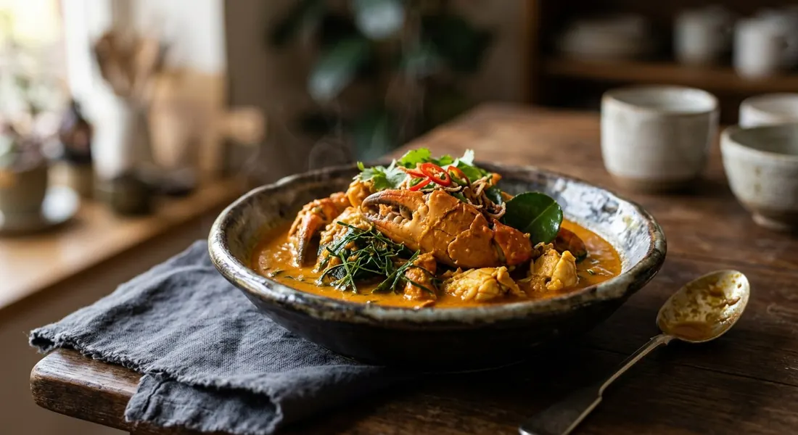

Turmeric-golden southern paste simmered in coconut milk, sweet crab and the peppery bite of betel leaves — the south's crab curry, ladled over rice vermicelli the way the coast eats it.

The name is the plainest in Thai cooking — แกงปู, crab curry — but nobody on the Andaman coast means just any crab curry. The dish that answers to gaeng poo carries ใบชะพลู, wild betel leaf, chopped into the pot at the end: peppery, aromatic, the green that cuts the richness of coconut milk and crab. Aroifin's mimi still remembers her first bowl by the sea; ครัวบ้านพิม's Pim remembers eating it constantly in Surat Thani, and her Phuket friend insists the correct bed for it is เส้นหมี่, blanched rice vermicelli — not rice.
The colour is the tell. Where central Thai coconut curries are often chilli-red, gaeng poo glows golden from ขมิ้นสด, fresh turmeric — every southern paste in our sources pounds it in, along with dried chilli, galangal, lemongrass, shallots, garlic and shrimp paste. Wongnai's จิ๋ว walks through the pounding order herself: peppercorns first, then the chillies and aromatics, shrimp paste last. The hotel version, from Smooth Curry's chef Tony Montri at the Plaza Athénée Bangkok, dresses the same curry up — crispy fried soft-shell crab riding on top, blanched vermicelli scattered with fried garlic, kaffir lime zest and fingerroot worked into the paste — and still notes, in passing, that most people simply eat gaeng poo with khanom jeen.
The curry itself is a quick one once the paste exists: fry the paste until fragrant, loosen it with coconut milk, season, simmer the betel leaves, and only then let the crab in — briefly. Pim's two rules are the ones that matter: season gradually, because shop-bought paste and shrimp paste are never the same saltiness, and stir gently, because hard stirring breaks the crab to rags. Everything else is patience with a mortar.
| Thai | English | Amount |
|---|---|---|
| น้ำพริกแกงใต้ | Southern Thai curry paste | 1/3 cup |
| น้ำมันเจียวกระเทียม | Garlic oil (oil from frying garlic) | 2 tbsp |
| กะทิ | Coconut milk | 2 cups |
| เกลือสมุทร | Sea salt | 1/2 tsp |
| น้ำปลา | Fish sauce | 1/2 tbsp |
| น้ำตาลปี๊บ | Palm sugar | 1/2 tbsp |
| ใบชะพลู (ซอยหยาบ) | Betel leaves, roughly chopped | 70 g |
| กรรเชียงปูนึ่ง | Steamed crab claws | 200 g |
| เส้นหมี่ขาว (ลวก) | Rice vermicelli, blanched, to serve | — |
The paste (Aroifin): 7 dried chillies, seeded and soaked; 1/4 tsp sea salt; 2 tsp galangal, finely chopped; 2 stalks lemongrass, sliced; 15 small garlic cloves; 1 tsp fresh turmeric; 3 shallots, chopped; 1 tsp shrimp paste (กะปิ). Wongnai's pot: a southern kua paste pounded from 20 dried chillies, galangal, 3 pieces of fresh turmeric, 5 stalks of lemongrass, 6 shallots, 3 tbsp garlic, peppercorns and shrimp paste — then 300 g crab claws into head coconut milk, water and tail coconut milk, with an extra spoon of shrimp paste in the pot. The hotel pot (Kapook/Smooth Curry): 120 g picked crab meat, 4 cups head coconut milk, 1½ cups tail coconut milk, betel leaves and torn kaffir lime leaves — plus a whole soft-shell crab dusted in flour and fried crisp, served on top. Pim's pot: 300 g picked crab meat, 3 tbsp shop-bought southern curry paste, 1 tsp shrimp paste, 40 betel leaves — the lazy version, and it still counts.
The paste. Aroifin, Wongnai and the hotel chef pound their own; Pim buys hers (3 tbsp of พริกแกงกะทิใต้) and just adds shrimp paste. Even the scratch pastes differ: Wongnai's is dried chilli, galangal, turmeric, lemongrass, shallots, garlic and peppercorn, while the chef's adds fresh bird's eye chillies, kaffir lime zest and fingerroot (กระชาย). All agree on the two non-negotiables: fresh turmeric, and shrimp paste.
The fat and the fry. Aroifin fries the paste in garlic oil, then adds coconut milk. The Kapook chef fries it in head coconut milk until the oil splits (แตกมัน), then eases in tail milk. Wongnai and Pim skip the fry entirely: they boil all the coconut milk (Wongnai's cut with water) and dissolve the paste into it — Pim's trick being a ladle of hot coconut milk stirred into the paste bowl first, so it dissolves in two or three stirs instead of fighting lumps.
The crab. Steamed crab claws (Aroifin, Wongnai), picked lump crab meat (Pim, the hotel chef's 120 g), and a whole crispy fried soft-shell crab as the topper (the chef again). Every version adds the crab last and cooks it briefly — it is already cooked, or nearly.
The betel leaf. Roughly chopped (Aroifin's 70 g, the chef's half cup), finely chopped (Wongnai's full cup) or simply halved (Pim's 40 leaves, cut small so they spoon up easily). Timing splits too: Aroifin simmers the leaves a full ten minutes before the crab arrives; the others drop them in at the end and kill the heat as soon as the pot boils again.
The serving bed. Blanched rice vermicelli — Aroifin, and Pim's Phuket friend who insists on it — versus khanom jeen, which Kapook notes is how most people eat gaeng poo, versus hot rice (Wongnai, Aroifin's alternative). Nobody argues against any of them; they argue for their own.
Kaffir lime leaves. Only the hotel chef adds them, torn into the pot with the betel. The home cooks let the betel leaf carry the whole aroma.
This recipe is translated from the following Thai-language sources. Where they disagree, we've said so.
1. Aroifin — "วิธีทำ แกงปูใบชะพลู เผ็ดร้อนกำลังดี หอมพริกแกงใต้ถึงเครื่อง" by mimi (the recipe used here) — aroifin.com
2. Wongnai — "แกงกะทิปูใบชะพลู" by จิ๋วหิวโซ (the homemade southern kua paste and the diluted pot) — wongnai.com
3. Kapook Cooking — "แกงปูใบชะพลู อาหารไทยเซตอิ่มคุ้มพร้อมสูตรน้ำพริกแกงใต้" (chef Tony Montri, Smooth Curry, Plaza Athénée Royal Méridien; via Gourmet & Cuisine) — cooking.kapook.com
4. ครัวบ้านพิม (Pim.in.th) — "เส้นหมี่แกงปูใบชะพลู" (the picked-crab and shop-paste version; the Phuket serving note) — pim.in.th
5. Kapook Cooking — "7 เมนูจากใบชะพลู" (includes ขนมจีนแกงปูใบชะพลู by Pantip's สาวนุ้ย@ภูเก็ต) — cooking.kapook.com